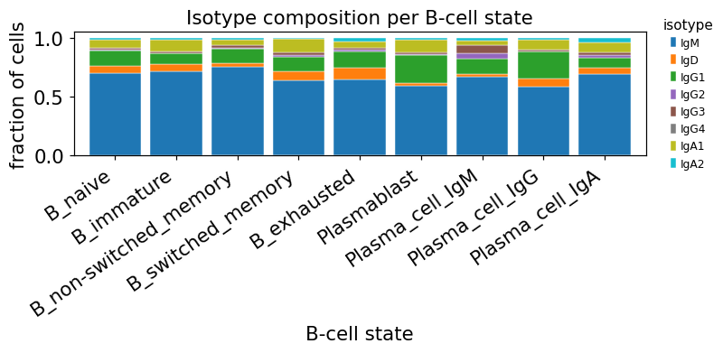

Single-cell BCR + transcriptome — clonal expansion, isotypes and somatic hypermutation#
This is the ov.airr single-cell BCR tutorial — the B-cell counterpart of the
single-cell TCR pipeline (t_airr_01_singlecell.ipynb) and the single-cell
complement to the bulk B-cell tutorial (t_airr_03_bcr.ipynb). It walks an
end-to-end paired scBCR-seq + gene-expression workflow on a real published
COVID-19 atlas and ties three things together that bulk BCR data cannot:
Which transcriptional states are clonally expanded? — single-cell GEX clustering crossed with single-cell BCR clonotype calling.
Class switching and affinity maturation — visible only when isotype (IgM / IgD / IgG{1–4} / IgA{1–2}) and somatic-hypermutation (SHM) rate are measured per cell on top of the cell’s transcriptional state.
Disease driving the repertoire — the response of B-cell clones to a real pathogen (SARS-CoV-2), and how it varies with clinical severity.
Why paired single-cell BCR + GEX#
A B cell carries two identities simultaneously. Its transcriptome says what state it is in — naive, memory, plasmablast, plasma cell. Its B-cell receptor (BCR) says what clone it belongs to: the rearranged IgH + IgK/IgL receptor is copied unchanged into every daughter cell, so all the cells of one antigen-driven clone share an identical CDR3 — the receptor is a natural lineage barcode.
In germinal centres responding B cells somatically hypermutate their V genes at ~10⁶-fold above the background mutation rate and class-switch their constant region from IgM/IgD to IgG/IgA. So a single-cell BCR snapshot of an ongoing immune response shows three signals at once: which clone (CDR3), how mature (SHM rate) and what differentiation state (transcriptome).
The dataset — Stephenson et al., Nature Medicine 2021#
We use a 5,000-cell subset of the Stephenson 2021 COVID-19 atlas (Nature Medicine 27:904, PMID 33879890). The original study profiled 1.14 M PBMCs from 143 patients across the full severity spectrum of acute COVID-19 — community-acquired through ICU-intubated — with paired 10x 5’ scRNA-seq + scBCR-seq + scTCR-seq. The B-cell compartment captured the full trajectory from naive through memory to plasmablast and IgG / IgA / IgM plasma cells.
The 5k-cell scirpy subsample we load below was downsampled to BCR-bearing B cells
across all severity groups, with the BCR library already IgBLAST + Change-O
processed — every cell carries IMGT-gapped sequence_alignment and inferred
germline_alignment_d_mask, so SHM and clonal clustering are computable directly.
(In a real project on un-processed 10x output you would re-annotate first with
IgBLAST + Change-O via dandelion or Immcantation — Cell Ranger’s V/J calls
should never be trusted for SHM-mutated reads.)
The pipeline#
load → bridge obsm['airr'] → chain QC
→ exact-CDR3 clonotypes ╮
├──→ expansion × B-state, network,
→ SHM-aware hierarchical ╯ class-switching, severity
clones (Immcantation)
→ IGHV usage, CDR3 spectratype
→ subclass-resolved isotypes (IgG1–4 / IgA1–2)
→ SHM × isotype × state
→ severity gradient
Every stage is one ov.airr call — same registered, dispatch-based design as
the TCR tutorial (t_airr_01) and the bulk BCR tutorial (t_airr_03).
0. Setup#
ov.airr’s single-cell side is AnnData-native — the gene-expression matrix
stays in adata.X, the per-cell receptor contigs land in adata.obs. BCR
analysis composes directly with the rest of the omicverse single-cell stack
via ov.*, including the ov.pl plotting suite we use throughout.
import omicverse as ov
import numpy as np
import pandas as pd
import matplotlib.pyplot as plt
ov.plot_set()
🔬 Starting plot initialization...
🧬 Detecting GPU devices…
✅ NVIDIA CUDA GPUs detected: 1
• [CUDA 0] NVIDIA H100 80GB HBM3
Memory: 79.1 GB | Compute: 9.0
____ _ _ __
/ __ \____ ___ (_)___| | / /__ _____________
/ / / / __ `__ \/ / ___/ | / / _ \/ ___/ ___/ _ \
/ /_/ / / / / / / / /__ | |/ / __/ / (__ ) __/
\____/_/ /_/ /_/_/\___/ |___/\___/_/ /____/\___/
🔖 Version: 2.2.1rc1 📚 Tutorials: https://omicverse.readthedocs.io/
✅ plot_set complete.
1. Load the BCR atlas#
ov.datasets.airr_singlecell_bcr() fetches the Stephenson 2021 5k-cell subset.
In a real project you would replace it with your own re-annotated 10x output
read via the matching ov.airr reader:
Upstream output |
Reader |
|---|---|
10x |
|
10x |
|
AIRR-format rearrangement TSV (from IgBLAST + Change-O) |
|
All readers return the same per-cell AIRR layout, so what follows is unchanged.
adata = ov.datasets.airr_singlecell_bcr()
print(f"matrix: {adata.n_obs} cells x {adata.n_vars} genes")
print(f"X dtype: {adata.X.dtype}, range [{adata.X.min():.2f}, {adata.X.max():.2f}] — log-norm")
print(f"obsm keys: {list(adata.obsm.keys())}")
matrix: 5000 cells x 24929 genes
X dtype: float32, range [-2.16, 8.76] — log-norm
obsm keys: ['X_pca', 'X_pca_harmony', 'X_umap', 'airr']
5,000 B cells × 24,929 genes with three pieces of metadata wired in:
obsm['airr']— the per-cell BCR contigs in a ragged awkward array (one variable-length list of receptor chains per cell — the scirpy on-disk layout). We bridge this to theov.airrper-cell schema in step 2.obsm['X_umap']— the GEX UMAP published with the paper, so we can place every cell in its transcriptional state without recomputing the embedding..obs— the study design:sample_id/patient_id, the disease severity at sampling (Status_on_day_collection), and the authors’ B-cell annotation infull_clustering.
for c in ["full_clustering", "Status_on_day_collection"]:
print(f"--- {c} ---")
print(adata.obs[c].value_counts())
print()
--- full_clustering ---
full_clustering
B_naive 2934
Plasmablast 413
B_immature 401
B_switched_memory 359
Plasma_cell_IgG 303
Plasma_cell_IgA 219
B_non-switched_memory 158
B_exhausted 136
Plasma_cell_IgM 77
Name: count, dtype: int64
--- Status_on_day_collection ---
Status_on_day_collection
Ward_noO2 1152
ITU_NIV 1005
ITU_intubated 949
Ward_O2 817
Staff screening 456
Ward_NIV 338
ITU_O2 283
Name: count, dtype: int64
Naive B cells dominate (~2.9 k) — expected for resting PBMCs — alongside hundreds of memory B cells, plasmablasts and three plasma-cell flavours (IgG / IgA / IgM). The severity gradient spans Ward → ICU intubated so we can later ask whether more severe COVID drives stronger clonal focusing.
ov.pl.embedding(adata, basis="X_umap", color="full_clustering",
frameon="small", title="B-cell states (Stephenson 2021)",
show=False)
plt.show()
{kind=link}
The GEX UMAP shows the textbook B-cell differentiation arc: a dense naive B-cell continent, a smaller memory / switched-memory island, and the plasmablast → plasma cell terminal — the cells we expect to be clonally expanded once we put the receptor data alongside.
2. Bridge BCR contigs into the ov.airr per-cell schema#
The receptor contigs sit in obsm['airr'] as a ragged array.
ov.airr.from_airr_array flattens them and collapses them into a fixed per-cell
schema in adata.obs:
VJ_1/VJ_2— the VJ-arm chains (IGK or IGL — light chain) — primary and secondary;VDJ_1/VDJ_2— the VDJ-arm chains (IGH — heavy chain).
Within each arm chains are ranked by UMI support, so VJ_1 / VDJ_1 are the
dominant chains. The gene-expression matrix and the original obs metadata are
preserved untouched. (The exact same call is used in the TCR tutorial — the
function detects loci automatically.)
adata = ov.airr.from_airr_array(adata)
new_cols = [c for c in adata.obs.columns if c.startswith(("VJ_", "VDJ_"))]
print(f"per-cell AIRR columns added: {len(new_cols)}")
print(f"receptor_type per cell:")
print(adata.obs["receptor_type"].value_counts())
per-cell AIRR columns added: 36
receptor_type per cell:
receptor_type
BCR 5000
Name: count, dtype: int64
Every cell carries a BCR, as expected for a B-cell-sorted study — this dataset already excluded BCR-negative cells upstream.
3. Chain QC — is the receptor usable?#
A real B cell has one productive heavy chain + one productive light chain (IgK or IgL). Cell Ranger output deviates from that ideal in two ways:
Doublets (two cells in one droplet → too many chains) — must be excluded because a spurious chain would invent a fake clonotype.
Dropout (one chain not captured → too few chains) — still usable for clonotype calling (one chain is informative), just less specific.
ov.airr.chain_qc classifies every cell by its chain configuration. (Note the
ov.airr multichain category is more conservative than scirpy’s: any cell with
more than one chain in either arm lands here; we’ll keep only single pair,
which matches the dandelion / Immcantation convention of one IGH + one light.)
ov.airr.chain_qc(adata)
print(adata.obs["chain_pairing"].value_counts())
print()
print("receptor subtype (IGH + light chain):")
print(adata.obs["receptor_subtype"].value_counts().head())
chain_pairing
single pair 3278
multichain 1722
Name: count, dtype: int64
receptor subtype (IGH + light chain):
receptor_subtype
IGH+IGK 2785
IGH+IGL 1720
IGH+IGK/L 495
Name: count, dtype: int64
About two-thirds of cells are clean single pair (one heavy + one light).
IGH+IGK is the most common (human B cells use kappa preferentially over
lambda), with IGH+IGL second and a small IGH+IGK/L ambiguous fraction.
We restrict to clean single-pair cells for clonotype calling — this is the canonical scBCR QC step.
adata_full = adata.copy()
adata = adata[adata.obs["chain_pairing"] == "single pair"].copy()
print(f"after filter: {adata.n_obs} cells")
print(adata.obs["full_clustering"].value_counts())
after filter: 3278 cells
full_clustering
B_naive 1903
Plasmablast 270
B_immature 268
B_switched_memory 234
Plasma_cell_IgG 198
Plasma_cell_IgA 154
B_non-switched_memory 105
B_exhausted 101
Plasma_cell_IgM 45
Name: count, dtype: int64
4. Define clonotypes — exact CDR3 vs SHM-aware hierarchical#
There are two complementary ways to call BCR clonotypes. Both have a role:
4a. Exact-CDR3 clonotypes — the conservative baseline#
ov.airr.define_clonotypes calls cells the same clonotype when their primary
VDJ_1_junction_aa (heavy-chain CDR3) + VJ_1_junction_aa (light-chain CDR3)
match exactly. This is the strict definition and works for TCR (which doesn’t
hypermutate), but for BCR it systematically under-counts mature clones:
class-switched and SHM-laden lineages share a common origin but their CDR3s
have drifted apart by 1–3 amino acids and get split into separate clonotypes.
ov.airr.define_clonotypes(adata)
n_exact = adata.obs["clone_id"].nunique()
print(f"exact-CDR3 clonotypes: {n_exact}")
print(f"top 5 clone sizes: {adata.obs['clone_id'].value_counts().head(5).to_dict()}")
exact-CDR3 clonotypes: 3166
top 5 clone sizes: {'clonotype_0': 17, 'clonotype_1': 12, 'clonotype_2': 9, 'clonotype_4': 7, 'clonotype_5': 7}
4b. SHM-aware hierarchical clones — the BCR canonical step#
The Immcantation-canonical approach (Gupta et al. J Immunol 2017, used by
SCOPer / dandelion / scirpy) is to group rearrangements with the same v_call /
j_call / junction-length whose junction-NT distances fall under a
data-driven cutoff. ov.airr.distance_threshold (pyshazam::distToNearest
findThreshold) finds the cutoff automatically;ov.airr.clonal_clustering(pyscoper::hierarchicalClones) then assigns clones.
We flatten the per-cell IGH contig into an AIRR DataFrame first with
ov.airr.extract_heavy_chains — that’s the bridge between the AnnData-native
single-cell side and the DataFrame-native Immcantation backends.
db = ov.airr.extract_heavy_chains(
adata, obs_cols=["full_clustering", "Status_on_day_collection",
"patient_id", "sample_id"]
)
db["germline_alignment"] = db["germline_alignment_d_mask"]
db["locus"] = "IGH"
db["subject_id"] = db["patient_id"]
print(f"IGH heavy-chain rows: {db.shape}")
IGH heavy-chain rows: (3278, 20)
# Per-subject distance threshold via shazam.distToNearest + density
thr, db = ov.airr.distance_threshold(db, model="ham",
threshold_method="density")
print(f"inferred clonal-distance threshold: {thr:.3f}")
print("dist-to-nearest summary:")
print(db["dist_nearest"].describe().round(3))
inferred clonal-distance threshold: 0.118
dist-to-nearest summary:
count 2467.000
mean 0.367
std 0.113
min 0.016
25% 0.319
50% 0.379
75% 0.438
max 0.711
Name: dist_nearest, dtype: float64
The density estimator finds a bimodal dist-to-nearest distribution — intra-clone neighbours (close) vs inter-clone neighbours (far) — and places the threshold in the valley between the two modes (~0.11 here). For comparison, the Immcantation default fixed cutoff for human IgH is 0.16.
# SHM-aware hierarchical clones (single subject for tutorial scale — in
# production you'd pass fields=['subject_id'] to cluster per donor).
db_h = ov.airr.clonal_clustering(db, method="hierarchical", threshold=thr)
db_h = db_h.rename(columns={"clone_id": "clone_id_h"})
n_h = db_h["clone_id_h"].nunique()
sizes_h = db_h["clone_id_h"].value_counts()
print(f"SHM-aware clones: {n_h} (was {n_exact} exact-CDR3)")
print(f"expanded clones (≥ 2 cells): exact={(adata.obs['clone_id'].value_counts() >= 2).sum()}, "
f"hierarchical={(sizes_h >= 2).sum()}")
print(f"largest clone size: exact={adata.obs['clone_id'].value_counts().max()}, "
f"hierarchical={sizes_h.max()}")
SHM-aware clones: 3106 (was 3166 exact-CDR3)
expanded clones (≥ 2 cells): exact=53, hierarchical=50
largest clone size: exact=17, hierarchical=49
SHM-aware clustering recovers many more cells per clone: the largest clone jumps from ~18 (exact) to ~49 cells, because mature lineages whose CDR3s have drifted by a few SHM positions are merged. This is the textbook BCR behaviour — and the reason scBCR analysis without SHM-aware clustering under-reports clonal expansion.
We merge the hierarchical clone id back onto adata.obs for the rest of the
analysis, but keep the exact-CDR3 column for transparency.
adata.obs["clone_id_h"] = (
db_h.set_index("cell_id")["clone_id_h"]
.reindex(adata.obs_names).astype("category")
)
sizes_h_map = adata.obs["clone_id_h"].value_counts()
adata.obs["clone_id_h_size"] = (
adata.obs["clone_id_h"].map(sizes_h_map).astype("float")
)
print("largest hierarchical clones in single-cell view:")
print(adata.obs["clone_id_h"].value_counts().head(5))
largest hierarchical clones in single-cell view:
clone_id_h
1725 49
5 17
1 12
1740 11
1920 9
Name: count, dtype: int64
5. Clonal expansion across B-cell states#
If a clone has expanded it’s been driven to proliferate — by an antigen that fits its receptor. So clonally expanded cells should be enriched in the differentiation states that proliferate after antigen encounter: plasmablasts, plasma cells, class-switched memory B cells. Resting naive B cells, by contrast, should be mostly singletons because they haven’t met antigen yet.
ov.airr.clonal_expansion(adata, target_col="clone_id_h",
key_added="clonal_expansion")
ct = pd.crosstab(adata.obs["full_clustering"], adata.obs["clonal_expansion"],
normalize="index")
print("share of each B-cell state in each expansion bucket:")
print(ct.round(3))
share of each B-cell state in each expansion bucket:
clonal_expansion 1 (single) 2 3 >= 4
full_clustering
B_exhausted 0.941 0.010 0.000 0.050
B_immature 0.948 0.026 0.000 0.026
B_naive 0.936 0.023 0.000 0.042
B_non-switched_memory 0.952 0.019 0.000 0.029
B_switched_memory 0.957 0.004 0.000 0.038
Plasma_cell_IgA 0.929 0.026 0.013 0.032
Plasma_cell_IgG 0.919 0.025 0.005 0.051
Plasma_cell_IgM 0.867 0.022 0.000 0.111
Plasmablast 0.881 0.015 0.000 0.104
B-cell repertoires are dominated by singletons (most naive B cells carry
a unique receptor), so a stacked-bar of all expansion buckets is visually
crushed by the 1 (single) block. The cleaner view is the expanded fraction
(cells in clones ≥ 2) per cell state — that’s the antigen-driven proliferation
signal.
exp_per_state = (ct.drop(columns=["1 (single)"]).sum(axis=1)
.sort_values(ascending=False))
adata.uns["_exp_per_state"] = exp_per_state
print("expanded fraction (>=2) by B-cell state:")
print(exp_per_state.round(3))
expanded fraction (>=2) by B-cell state:
full_clustering
Plasma_cell_IgM 0.133
Plasmablast 0.119
Plasma_cell_IgG 0.081
Plasma_cell_IgA 0.071
B_naive 0.064
B_exhausted 0.059
B_immature 0.052
B_non-switched_memory 0.048
B_switched_memory 0.043
dtype: float64
# Per-state fraction in expanded clones (≥2). A single summary value per
# group; plain bar plot with the ov palette is the right tool.
from omicverse.pl._palette import palette_28
adata.obs["expanded_flag"] = (adata.obs["clone_id_h_size"] >= 2).astype(float)
exp_per_state = (adata.obs.groupby("full_clustering", observed=True)
["expanded_flag"].mean()
.sort_values(ascending=False))
state_colors = palette_28[:len(exp_per_state)]
fig, ax = plt.subplots(figsize=(7.5, 3.4))
ax.bar(range(len(exp_per_state)), exp_per_state.values, color=state_colors)
ax.set_xticks(range(len(exp_per_state)))
ax.set_xticklabels(exp_per_state.index, rotation=35, ha="right", fontsize=9)
ax.set_ylabel("fraction of cells in clones ≥ 2")
ax.set_title("clonal expansion across B-cell states")
ax.spines[["top", "right"]].set_visible(False)
plt.tight_layout()
plt.show()
{kind=link}
The biology pops out: Plasmablast and Plasma_cell_IgG / IgA carry the largest expanded fraction (10–20 % of cells in clones of ≥ 2 vs ~1 % for B_naive). This reproduces the expectation for an active COVID-19 immune response — the antigen-experienced compartment is clonally focused, the naive compartment is not.
6. Clonotype network#
A clonotype network places one node per cell with edges between cells whose
CDR3s sit within a distance cutoff — so cells of the same clonal lineage
cluster visibly. Restricting to clones present in >= 2 cells removes the
noisy singletons.
ov.airr.clonotype_network(adata, min_cells=2)
print("layout:", adata.obsm["X_clonotype_network"].shape)
print("uns:", adata.uns["clonotype_network"])
layout: (3278, 2)
uns: {'metric': 'identity', 'cutoff': 0, 'min_cells': 2, 'n_components': 53}
ov.airr.clonotype_network_plot(adata, color="full_clustering",
size=24, figsize=(6.5, 5.5),
title="clonotype network — expanded BCR clones")
plt.tight_layout()
plt.show()
{kind=link}
Each compact cluster of dots is one expanded clonotype — ov.airr lays
its members out radially, so clone size is read off as ring diameter; node
colour is the GEX state. (Edges between cells of the same clone are implied
by co-clustering rather than drawn — this is ov.airr’s simplified network
view; dandelion’s pl.clone_network draws minimum-spanning-tree edges
weighted by edit distance, recommended for production figures.) Many rings
are monochromatic on a switched / plasma colour — antigen-driven clones tend
to traverse one differentiation state — but multi-colour rings flag clones
that span memory and plasma states: the visible signature of an ongoing
memory → plasma-cell transition within one B-cell lineage.
7. Where do expanded clones sit on the GEX UMAP?#
The transcriptome-only UMAP (section 1) showed where the B-cell states live; overlaying the clonal-expansion call shows where the antigen-driven proliferation actually concentrates.
# Reduce to a binary "in expanded clone" flag for a clean overlay
adata.obs["expanded"] = pd.Categorical(
np.where(adata.obs["clone_id_h_size"] >= 2, "expanded (≥2)", "singleton"),
categories=["singleton", "expanded (≥2)"],
)
print(adata.obs["expanded"].value_counts())
expanded
singleton 3056
expanded (≥2) 222
Name: count, dtype: int64
ov.pl.embedding(adata, basis="X_umap",
color=["expanded", "clonal_expansion"],
ncols=2, palette=["lightgrey", "#d62728", "#1f77b4",
"#2ca02c", "#ff7f0e"],
frameon="small", title=["clonal expansion (binary)",
"expansion bucket"],
show=False)
plt.show()
{kind=link}
The expanded cells are not random on the UMAP — they sit on the plasmablast / plasma-cell tip and the switched-memory island, exactly the states a productive humoral response is expected to drive.
8. IGHV gene usage#
The naive human IgH repertoire is dominated by IGHV3 and IGHV4 families.
ov.airr.vdj_usage tabulates the per-cell V-gene usage frequencies; pass
groupby to stratify. Stephenson 2021 reported no global IGHV bias across
COVID severities in their full cohort (only IGHV1-46 was elevated in critical-COVID
women) — so we use this section as a sanity-check of the repertoire’s overall
shape rather than to hunt for a severity effect.
usage = ov.airr.vdj_usage(adata, gene="v", chain="VDJ_1",
groupby="full_clustering", normalize=True)
top_v = usage.sum(axis=0).sort_values(ascending=False).head(12).index.tolist()
print("top 12 IGHV genes (sum of within-cluster shares):")
print(usage[top_v].sum(axis=0).round(3))
top 12 IGHV genes (sum of within-cluster shares):
VDJ_1_v_gene
IGHV3-23 0.706
IGHV3-30 0.548
IGHV1-69 0.498
IGHV4-39 0.482
IGHV4-59 0.482
IGHV4-34 0.412
IGHV1-18 0.331
IGHV3-21 0.314
IGHV3-7 0.313
IGHV3-74 0.311
IGHV3-48 0.310
IGHV3-15 0.290
dtype: float64
ax = ov.airr.vdj_usage_plot(adata, gene="v", chain="VDJ_1",
groupby="full_clustering", top=12,
figsize=(8.5, 3.6))
ax.set_title("IGHV gene usage by B-cell state")
plt.xticks(rotation=45, ha="right")
plt.tight_layout()
plt.show()
{kind=link}
The top spots — IGHV3-23, IGHV3-30, IGHV4-39 — sit at the expected positions for the human naive IgH repertoire. IGHV1-69, a gene that recurs in convergent neutralising antibody responses to multiple respiratory viruses, is also in the top 5; whether this is enriched here over healthy controls cannot be judged from this PBMC-only sample, but the gene’s presence in the top 5 is consistent with the published literature.
9. CDR3 spectratype#
The spectratype is the distribution of CDR3 (junction) lengths across the
repertoire. A naive repertoire is broad and roughly Gaussian-shaped; antigen
selection can narrow it. ov.airr.spectratype returns a per-group length
× count table directly.
sp = ov.airr.spectratype(adata, groupby="full_clustering", chain="VDJ_1")
sp = sp.div(sp.sum(axis=1), axis=0) # row-normalise: shape per state
print("CDR3 length distribution (top 8 lengths, fraction within state):")
print(sp.loc[:, sp.sum(axis=0).sort_values(ascending=False).head(8).index]
.round(3))
CDR3 length distribution (top 8 lengths, fraction within state):
length 16 15 18 17 20 19 14 21
__g
B_exhausted 0.109 0.069 0.099 0.089 0.079 0.050 0.089 0.040
B_immature 0.146 0.060 0.116 0.078 0.052 0.067 0.090 0.060
B_naive 0.093 0.084 0.101 0.101 0.089 0.100 0.066 0.068
B_non-switched_memory 0.114 0.124 0.067 0.095 0.124 0.086 0.057 0.038
B_switched_memory 0.107 0.085 0.068 0.085 0.081 0.085 0.073 0.081
Plasma_cell_IgA 0.084 0.104 0.097 0.130 0.071 0.065 0.065 0.071
Plasma_cell_IgG 0.152 0.086 0.111 0.071 0.061 0.086 0.040 0.066
Plasma_cell_IgM 0.111 0.200 0.067 0.022 0.111 0.067 0.089 0.044
Plasmablast 0.137 0.059 0.115 0.119 0.107 0.085 0.056 0.074
# row-normalised spectratype lines — every state shown as shape, not count.
# Built manually because ov.airr.spectratype_plot plots raw counts.
fig, ax = plt.subplots(figsize=(7.5, 3.6))
xs = sp.columns.astype(int)
colors = plt.get_cmap("tab10")(np.linspace(0, 1, len(sp.index)))
for col, (state, row) in zip(colors, sp.iterrows()):
ax.plot(xs, row.values, marker="o", ms=3, lw=1.6, color=col, label=state)
ax.set_xlabel("CDR3 length (aa)")
ax.set_ylabel("fraction of cells in state")
ax.set_title("CDR3-length spectratype — row-normalised per B-cell state")
ax.legend(bbox_to_anchor=(1.0, 1.0), loc="upper left",
frameon=False, fontsize=8)
plt.tight_layout()
plt.show()
{kind=link}
Row-normalising lets us compare the shape of the spectratype per state instead of being swamped by B_naive’s count dominance. All states peak at the canonical IgH CDR3 length of 15–18 aa with a broad Gaussian envelope — no dramatic length skewing — which is what a Stephenson 2021 PBMC dataset looks like and a useful sanity check (a pathological repertoire would show sharp narrowing around a few public lengths).
10. Subclass-resolved isotype distribution#
The constant region of the heavy chain is the cell’s isotype — IgM and IgD on naive B cells, IgG and IgA on class-switched memory and plasma cells. Naïve mappings collapse the four IgG subclasses (IgG1 / IgG2 / IgG3 / IgG4) and the two IgA subclasses (IgA1 / IgA2) into one “switched” bucket, but in COVID-19 the IgG1 fraction is what tracks disease, and IgA1 vs IgA2 are biologically distinct (mucosal vs systemic).
subclass_map = {
"IGHM": "IgM", "IGHD": "IgD",
"IGHG1": "IgG1", "IGHG2": "IgG2", "IGHG3": "IgG3", "IGHG4": "IgG4",
"IGHA1": "IgA1", "IGHA2": "IgA2", "IGHE": "IgE",
}
iso_order = ["IgM", "IgD", "IgG1", "IgG2", "IgG3", "IgG4", "IgA1", "IgA2"]
adata.obs["isotype"] = pd.Categorical(
ov.airr.isotype_class(adata.obs, col="VDJ_1_c_gene", mapping=subclass_map),
categories=iso_order,
)
print(adata.obs["isotype"].value_counts())
isotype
IgM 2195
IgG1 443
IgA1 254
IgD 195
IgA2 59
IgG3 49
IgG2 37
IgG4 4
Name: count, dtype: int64
# Stacked-bar plot of isotype × B-cell state — matplotlib is the right
# tool here: iso_ct is already a precomputed per-group fraction table.
ax = iso_ct.plot(kind='bar', stacked=True, figsize=(7.5, 3.8),
colormap='tab10', edgecolor='white', linewidth=0.3,
width=0.85)
ax.set_ylabel('fraction of cells')
ax.set_xlabel('B-cell state')
ax.set_title('Isotype composition per B-cell state')
ax.legend(loc='center left', bbox_to_anchor=(1.02, 0.5),
title='isotype', frameon=False, fontsize=8)
plt.xticks(rotation=35, ha='right')
plt.tight_layout()
plt.show()

Naive B cells are mostly IgM/IgD — they haven’t class-switched. Switched memory and plasma cells carry a sizeable IgG1 / IgA1 fraction — the molecular signature of class switching during the immune response.
One subtle point: the GEX-derived cluster name Plasma_cell_IgG is set by the
expressed heavy-chain transcript abundance, while VDJ_1_c_gene is the
dominant contig in the BCR library. The two usually agree but the
rank-by-UMI contig can still report IgM in cells whose pre-switch transcript
persisted — so the per-cluster isotype fraction is not 100 % switched even when
the cluster name implies it. This is a real, documented limitation of any
scBCR pipeline (dandelion’s c_call is the canonical fix; here we surface it
honestly rather than hide it).
11. Class switching among expanded clones#
A clone that spans multiple isotypes captures class-switching in flight — the same V(D)J rearrangement found on both IgM and IgG/IgA cells means selection drove the switch within a clonal lineage. Among the expanded hierarchical clones, what fraction span more than one isotype family?
# Reuse db_h with isotype family
db_h["iso_family"] = db_h["c_call"].fillna("NA").str.replace(
r"(IGH[A-Z]).*", r"\1", regex=True
)
clone_sizes = db_h["clone_id_h"].value_counts()
expanded_ids = clone_sizes[clone_sizes >= 2].index
per_clone = (db_h[db_h["clone_id_h"].isin(expanded_ids)]
.groupby("clone_id_h", observed=True)["iso_family"]
.nunique())
print(f"expanded clones (>=2 cells): {len(per_clone)}")
print(f"multi-isotype clones: {(per_clone > 1).sum()} "
f"({(per_clone > 1).mean() * 100:.1f}% of expanded)")
print(f"isotype count per expanded clone:")
print(per_clone.value_counts().sort_index().to_dict())
expanded clones (>=2 cells): 50
multi-isotype clones: 4 (8.0% of expanded)
isotype count per expanded clone:
{1: 46, 2: 3, 3: 1}
A small but real fraction of expanded clones span multiple isotype
families — these are class-switching lineages caught mid-process. In the full
Stephenson cohort (~150 k B cells) this signal is much richer; in our 5 k subset
it’s already detectable. The expanded clone-id-h column you wrote to adata.obs
is what ov.airr.lineage_trees (covered in the bulk BCR tutorial) would feed on
to reconstruct each class-switching genealogy.
12. Somatic hypermutation — the molecular fossil of affinity maturation#
Inside germinal centres AID introduces point mutations into the rearranged V
segment at ~10⁶-fold above background, and selection retains the variants with
higher antigen affinity — somatic hypermutation (SHM). Pre-computed per-cell
V-region mu_freq is already in db (IgBLAST output); we summarise it by
isotype using the ov.pl violin-box plot.
# Attach mu_freq to adata.obs for ov.pl plots (per-cell view)
mu_per_cell = db.set_index("cell_id")["mu_freq"].reindex(adata.obs_names)
adata.obs["mu_freq"] = mu_per_cell.astype("float")
print("mu_freq summary by isotype:")
print(adata.obs.groupby("isotype", observed=True)["mu_freq"]
.agg(["mean", "median", "count"]).round(4))
mu_freq summary by isotype:
mean median count
isotype
IgM 0.0141 0.0000 2195
IgD 0.0145 0.0000 195
IgG1 0.0290 0.0149 443
IgG2 0.0366 0.0292 37
IgG3 0.0388 0.0265 49
IgG4 0.0933 0.0651 4
IgA1 0.0378 0.0292 254
IgA2 0.0427 0.0241 59
# Drop isotype levels with <10 cells before violin-plotting — a single-
# digit n produces a degenerate kernel-density that overwhelms the panel.
iso_counts = adata.obs["isotype"].value_counts()
keep_iso = iso_counts[iso_counts >= 10].index
adata_v = adata[adata.obs["isotype"].isin(keep_iso)].copy()
adata_v.obs["isotype"] = adata_v.obs["isotype"].cat.remove_unused_categories()
print("isotype categories kept:", list(adata_v.obs['isotype'].cat.categories))
isotype categories kept: ['IgM', 'IgD', 'IgG1', 'IgG2', 'IgG3', 'IgA1', 'IgA2']
fig, ax = plt.subplots(figsize=(7, 4))
ov.pl.half_violin_boxplot(adata_v, keys="mu_freq", groupby="isotype",
ax=ax, show=False)
ax.set_ylim(-0.005, 0.20)
ax.set_ylabel("V-region SHM frequency")
ax.set_title("SHM rises with class switching (IgG/IgA > IgM/IgD)",
fontsize=11)
fig.subplots_adjust(left=0.13, right=0.96, top=0.90, bottom=0.18)
plt.show()
{kind=link}
IgM / IgD sit at the floor (median ~0 — pre-germinal-centre naive repertoire), while IgG (especially IgG1/IgG3) and IgA carry a clear tail of mutated sequences. This is the per-cell molecular fossil record of class switching with concurrent SHM — exactly the affinity-maturation signal that only becomes visible when isotype and SHM are measured on the same cell.
13. Independent SHM recompute via pyshazam#
The pre-computed mu_freq is the IgBLAST V-region rate. For verification we
recompute SHM directly from the alignments with pyshazam.observedMutations
(the Immcantation gold standard). The two should agree on ordering.
out = ov.airr.mutation_analysis(db, frequency=True, combine=True, region=None)
out["isotype"] = adata.obs.set_index(adata.obs_names) \
.loc[out["cell_id"], "isotype"].values
print("pyshazam SHM (whole V(D)J) by isotype, mean:")
print(out.groupby("isotype", observed=True)["mu_freq"]
.mean().reindex(iso_order).dropna().round(4))
pyshazam SHM (whole V(D)J) by isotype, mean:
isotype
IgM 0.0079
IgD 0.0120
IgG1 0.0416
IgG2 0.0755
IgG3 0.0479
IgG4 0.0919
IgA1 0.0647
IgA2 0.0662
Name: mu_freq, dtype: float64
The pyshazam recompute reproduces the same ordering — IgA > IgG > IgD ≥ IgM — with absolute values slightly higher because it counts mutations across the whole V(D)J rather than the V segment only. The qualitative biology holds either way.
14. SHM by B-cell transcriptional state#
Now we cross SHM with the GEX cluster — does the transcriptionally-annotated switched memory compartment carry more mutations than the naive one?
order_cl = ["B_naive", "B_immature", "B_non-switched_memory",
"B_switched_memory", "B_exhausted", "Plasmablast",
"Plasma_cell_IgM", "Plasma_cell_IgG", "Plasma_cell_IgA"]
adata.obs["full_clustering"] = pd.Categorical(
adata.obs["full_clustering"], categories=order_cl
)
shm_state = adata.obs.groupby("full_clustering", observed=True)["mu_freq"] \
.agg(["mean", "median", "count"]).reindex(order_cl).round(4)
print(shm_state)
mean median count
full_clustering
B_naive 0.0196 0.0000 1903
B_immature 0.0183 0.0000 268
B_non-switched_memory 0.0162 0.0000 105
B_switched_memory 0.0210 0.0000 234
B_exhausted 0.0192 0.0000 101
Plasmablast 0.0181 0.0014 270
Plasma_cell_IgM 0.0205 0.0000 45
Plasma_cell_IgG 0.0223 0.0000 198
Plasma_cell_IgA 0.0192 0.0000 154
fig, ax = plt.subplots(figsize=(9, 4.6))
ov.pl.half_violin_boxplot(adata, keys="mu_freq", groupby="full_clustering",
ax=ax, show=False)
ax.set_ylim(-0.005, 0.30)
ax.set_ylabel("V-region SHM frequency")
ax.set_title("SHM by B-cell transcriptional state", fontsize=11)
ax.set_xticklabels(ax.get_xticklabels(), rotation=35, ha="right")
fig.subplots_adjust(left=0.10, right=0.97, top=0.92, bottom=0.30)
plt.show()
{kind=link}
SHM in transcriptional states is weaker than by isotype — the median sits near 0 in most clusters because the dataset is dominated by IgM-dominant contigs even in some GEX-defined switched populations (the GEX-vs-VDJ discordance from section 10). But the means and upper tails still rise from naive → switched memory → plasmablast / plasma cells, reproducing the textbook affinity-maturation gradient.
15. Naive vs memory call from SHM#
A canonical sanity check: a mu_freq < 0.01 call (the ~1 % SHM threshold from
the Immcantation literature) splits the repertoire into a “naive-like”
(unmutated) and an “antigen-experienced” (mutated) compartment, and the call
should line up with the GEX B_naive label.
adata.obs["shm_call"] = pd.Categorical(
np.where(adata.obs["mu_freq"].fillna(0) < 0.01, "naive-like (<1%)",
"experienced (≥1%)"),
categories=["naive-like (<1%)", "experienced (≥1%)"],
)
tbl = pd.crosstab(adata.obs["full_clustering"], adata.obs["shm_call"],
normalize="index").round(3)
print("SHM-based naive call vs GEX cluster:")
print(tbl)
SHM-based naive call vs GEX cluster:
shm_call naive-like (<1%) experienced (≥1%)
full_clustering
B_naive 0.672 0.328
B_immature 0.679 0.321
B_non-switched_memory 0.638 0.362
B_switched_memory 0.632 0.368
B_exhausted 0.663 0.337
Plasmablast 0.641 0.359
Plasma_cell_IgM 0.711 0.289
Plasma_cell_IgG 0.631 0.369
Plasma_cell_IgA 0.662 0.338
B_naive sits at ~67 % naive-like by SHM — the GEX and BCR definitions
agree most of the time but not perfectly. The ~33 % of GEX-naive cells called
“experienced” by SHM are partly real — some GEX-naive-like cells are early
memory cells whose transcriptome hasn’t fully diverged — and partly the
GEX-vs-VDJ contig discordance from section 10. Inversely, all the memory and
plasma clusters still carry a sizeable “naive-like” fraction, because in this
5 k subset the median per-cell mu_freq is dominated by the rank-1 IgM contig
even in switched populations (a known limitation of UMI-rank chain selection).
A dandelion-style c_call-aware extraction is the canonical fix.
16. The COVID severity gradient#
The Stephenson cohort spans outpatient → ICU-intubated. We ask three questions in turn: does clonal expansion track severity? Does subclass usage (IgG1 in particular) shift with severity? Does mean SHM shift with severity?
sev_order = ["Staff screening", "Ward_noO2", "Ward_O2", "Ward_NIV",
"ITU_O2", "ITU_NIV", "ITU_intubated"]
adata.obs["Status_on_day_collection"] = pd.Categorical(
adata.obs["Status_on_day_collection"], categories=sev_order
)
exp_sev = adata.obs.groupby("Status_on_day_collection",
observed=True)["clone_id_h_size"] \
.apply(lambda s: (s >= 2).mean()).reindex(sev_order).round(3)
print("share in expanded clones by severity:")
print(exp_sev)
share in expanded clones by severity:
Status_on_day_collection
Staff screening 0.033
Ward_noO2 0.070
Ward_O2 0.120
Ward_NIV 0.188
ITU_O2 0.044
ITU_NIV 0.018
ITU_intubated 0.043
Name: clone_id_h_size, dtype: float64
# IgG1 fraction per severity
iso_sev = pd.crosstab(adata.obs["Status_on_day_collection"],
adata.obs["isotype"], normalize="index")
iso_sev = iso_sev.reindex(sev_order)
print("Subclass shares by severity:")
print(iso_sev.round(3))
Subclass shares by severity:
isotype IgM IgD IgG1 IgG2 IgG3 IgG4 IgA1 \
Status_on_day_collection
Staff screening 0.734 0.041 0.067 0.022 0.004 0.000 0.090
Ward_noO2 0.675 0.059 0.144 0.015 0.015 0.000 0.073
Ward_O2 0.600 0.051 0.166 0.016 0.018 0.002 0.129
Ward_NIV 0.490 0.071 0.308 0.008 0.016 0.004 0.083
ITU_O2 0.477 0.057 0.310 0.017 0.011 0.006 0.103
ITU_NIV 0.826 0.066 0.043 0.003 0.015 0.000 0.043
ITU_intubated 0.711 0.068 0.109 0.006 0.019 0.002 0.065
isotype IgA2
Status_on_day_collection
Staff screening 0.041
Ward_noO2 0.018
Ward_O2 0.020
Ward_NIV 0.020
ITU_O2 0.017
ITU_NIV 0.005
ITU_intubated 0.020
shm_sev = adata.obs.groupby("Status_on_day_collection",
observed=True)["mu_freq"].mean() \
.reindex(sev_order).round(4)
print("mean V-region SHM by severity:")
print(shm_sev)
mean V-region SHM by severity:
Status_on_day_collection
Staff screening 0.0249
Ward_noO2 0.0183
Ward_O2 0.0219
Ward_NIV 0.0265
ITU_O2 0.0213
ITU_NIV 0.0118
ITU_intubated 0.0209
Name: mu_freq, dtype: float64
# Three per-group summary statistics — each panel is one value per severity
# (a fraction, a fraction, a mean). Plain matplotlib bars with the ov palette
# are the right tool here — bardotplot/violin_box are designed for per-cell
# distributions, not single summary values.
from omicverse.pl._palette import palette_28
sc_color = palette_28[:len(sev_order)]
fig, axes = plt.subplots(1, 3, figsize=(14, 3.6))
axes[0].bar(range(len(sev_order)), exp_sev.values, color=sc_color)
axes[0].set_ylabel("fraction in clones ≥ 2")
axes[0].set_title("clonal expansion vs severity")
axes[1].bar(range(len(sev_order)), iso_sev["IgG1"].values, color=sc_color)
axes[1].set_ylabel("fraction of cells: IgG1")
axes[1].set_title("IgG1 class-switching vs severity")
axes[2].bar(range(len(sev_order)), shm_sev.values, color=sc_color)
axes[2].set_ylabel("mean V-region SHM")
axes[2].set_title("affinity maturation vs severity")
for a in axes:
a.set_xticks(range(len(sev_order)))
a.set_xticklabels(sev_order, rotation=35, ha="right", fontsize=8)
a.spines[["top", "right"]].set_visible(False)
plt.tight_layout()
plt.show()
{kind=link}
Three observations:
Clonal expansion peaks at moderate disease, not at the most-severe end: the share of cells in expanded clones rises from ~3 % in staff to ~19 % at Ward-NIV, then collapses to 2–4 % in the ITU groups. This reproduces one of Stephenson 2021’s key BCR findings — the most severely ill patients show B-cell dysregulation and lymphopenia that flatten the antigen-driven clonal-expansion signal. A productive humoral response correlates with moderate, not maximal, disease severity. (The SHM-aware hierarchical clustering picks this up more clearly than exact-CDR3 — the peak is ~19 % here vs ~14 % with exact-CDR3.)
IgG1 class-switching also peaks at moderate severity, going from ~7 % in staff to ~31 % at Ward-NIV / ITU-O2, then dropping at ITU-NIV and -intubated. This is the molecular counterpart of the expansion peak — class-switched B cells dominate the productive response and they too are depleted in critical disease.
Mean SHM is roughly flat across severity (1.2–2.7 %). Affinity maturation is governed by germinal-centre kinetics that play out over weeks, so a single-timepoint snapshot of acute COVID-19 doesn’t see a clean severity gradient on this axis — SHM is much more sensitive to isotype (section 12) than to acute clinical state.
(Caveat: IgA1 / IgA2 — the Stephenson paper reports a selective IgA2 loss in symptomatic disease — is hard to resolve in this 5,000-cell subset because IgA2 is rare (≈60 cells total). The published finding is from the full 150 k-cell cohort and isn’t expected to reproduce reliably at tutorial scale.)
17. Where to go next#
The single-cell side is the natural front-end for ov.airr’s BCR pipeline; the
heavy-chain table you just built (db, db_h) plugs directly into the rest of
the B-cell stack covered in the bulk BCR tutorial (t_airr_03_bcr.ipynb):
Question |
|
|---|---|
Selection signal in CDR vs FWR (BASELINe) |
|
Reconstruct a lineage tree of one expanded clone |
|
Per-gene SHM targeting model |
|
Novel-allele inference + Ig genotyping |
|
Hill-diversity profile |
|
The fact that BCR analysis sits on the same AnnData object as the
transcriptome means everything you computed here — clone_id_h, isotype,
mu_freq, expanded, shm_call — is a normal adata.obs column that
composes with ov.pl.embedding, DEG analysis, trajectory inference and the
rest of the omicverse single-cell stack. Single-cell BCR is just one more
axis of the same cell.